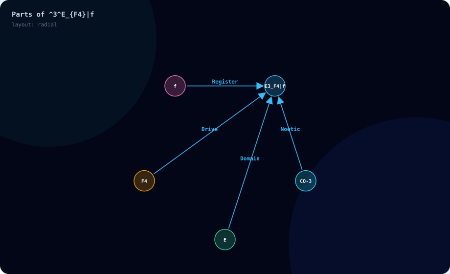

Front
MeaningA concise canonical definition or declared structural meaning. A state combines its Noetic, domain, drive and register coordinates.
A diagram is a map of what you wrote. It separates the parts so you can inspect the structure, follow a relationship and find the corresponding record in the output.
^3^E_{F4}|f
| Visible item | Read it this way |
|---|---|
| E3_F4|f | The complete state: Negative in the Evaluative domain, with Connection and the Affective register. |
| CO-3 → state, labeled Noetic | This operator instantiates the state. |
| E → state, labeled Domain | This domain locates the state. |
| F4 → state, labeled Drive | This drive annotates or modulates the state. |
| f → state, labeled Register | This register describes the state’s manner of expression. |
A node is one represented item: a state, operator, domain, drive, register, named net or other compiler object. An edge is a relationship between two items. Follow its arrowhead from the source to the target and read its label. Here arrows show how the parts contribute to a state. In other examples they can show a transition, membership, dependency or recipe ingredient.
The arrows in this map are structural relationships. They do not say the person moved through four moments in time. Containers group sets; their membership and cardinality tell you what they contain. In CCDL, named nets keep their own identities even when their CAS state types match.
Load this diagram’s expression
Change |f to |A, then run again. The register node becomes A, and Result reports Analytical. The operator, domain and drive remain the same. Describe why you chose a reasoning-based rather than feeling-toned account.
Click a cube to read all six sides below the scene. The full text is available without rotating the cube. Surface text is a short preview.
Front
MeaningA concise canonical definition or declared structural meaning. A state combines its Noetic, domain, drive and register coordinates.
Right
SymbolThe actual graph ID, label, kind and role. Reference notation is marked as reconstructed. Component parameters are declared or parser defaults, not measurements.
Left
ConnectionsTyped graph relations, component terminal attachments, declared probes and container membership. These are separate records; they do not form a timeline.
Back
OriginThe compiler graph and definition references. An unchanged, successfully run teaching example also identifies its authored context. Missing exact source spans remain explicitly unavailable.
Top
ExplanationRicher canonical teaching or the positively matched authored scenario reading. Edited and custom input keeps canonical reference material without inheriting the original story.
Bottom
ExplorationRelated items and definitions to inspect. Use the displayed-item selector or Read this item’s explanation. These controls never run or edit code.
The blue compiler graph cube is an added organizing root. It and its dashed links arrange the display. Its six sides explain that layout role; they carry no authored scenario annotation. Five semantic nodes in this example become six displayed cubes.
The same six-purpose records appear in the live view, SVG and Interactive HTML. SVG keeps full face text in its metadata and hover titles; its small in-diagram inspector abbreviates it. Interactive HTML retains the complete readable inspector and explicit exploration controls.
Cube colors group graph roles. Their inherited category names are presentation labels; a green cube can be an authored target, for example.
| Color | Cube role | Meaning |
|---|---|---|
| Blue | Organizing root | Added for layout; marked LAYOUT ONLY. |
| Teal | CAS container | Groups compiler objects, such as a set. |
| Cyan | Identifier | Default role, including state and symbol nodes. |
| Violet | Operator or call | A graph operation or function call. |
| Green | Target, emergent or output | A named result/output role. |
| Amber | Fractal or step | An ordered-sequence or step role. |
| Rose | Assertion or confidence category | An assertion node can have this category; read the actual result and evidence status. |
The 2D map colors node kinds: states sky blue, Noetics cyan, domains emerald, drives amber, registers pink, calls/operators purple, targets lavender, and clusters teal. The editor colors syntax categories. Thus Ω can be orange in code, lavender in the map and green as a cube target. Read the label to keep the role clear.
The scene grows into the available desktop column. On phones it uses a bounded height. The display caps at 72 items and 80 relations; Full JSON retains the complete compiler artifact.
This lesson is based on cas_cubes.py: _faces, _kind, PALETTE and compiler_tree; cas_svg.py: _color and render_map_svg; and this Site’s interaction controls. The SVG above was generated from the actual compilation artifact. The Site’s six-purpose content module supplies Meaning, Symbol, Connections, Origin, Explanation and Exploration while preserving the renderer’s geometry and controls. These renderer details are supplementary to Programming in CAS.